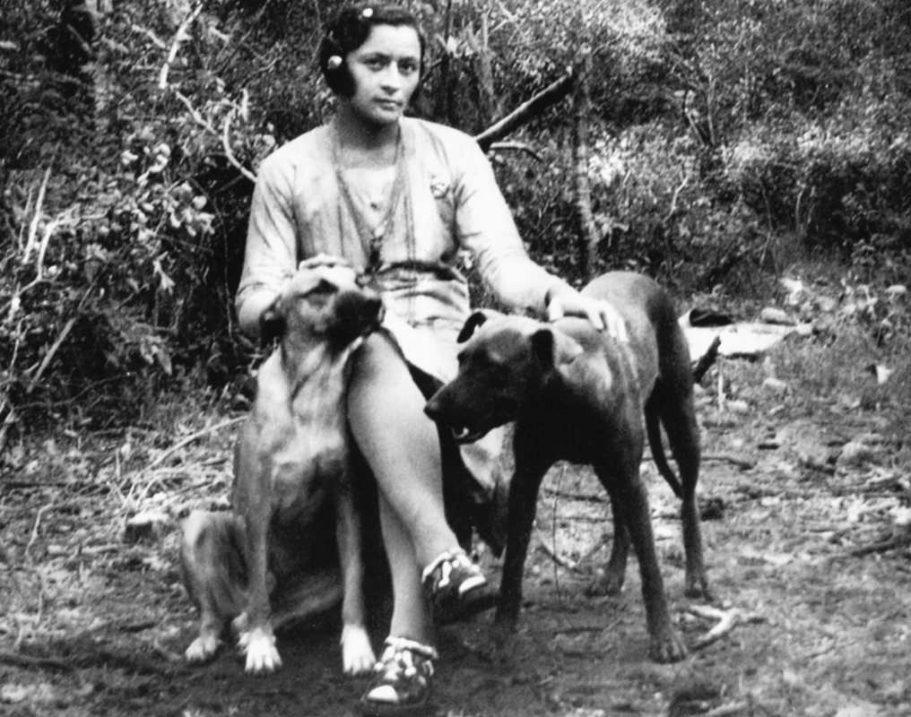
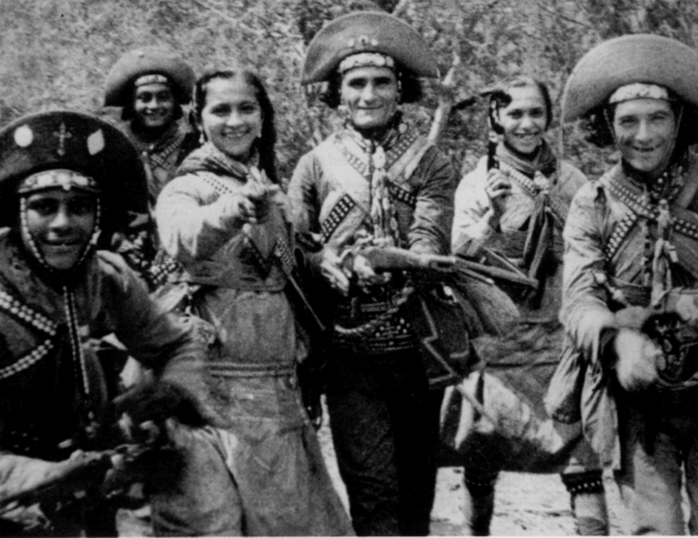
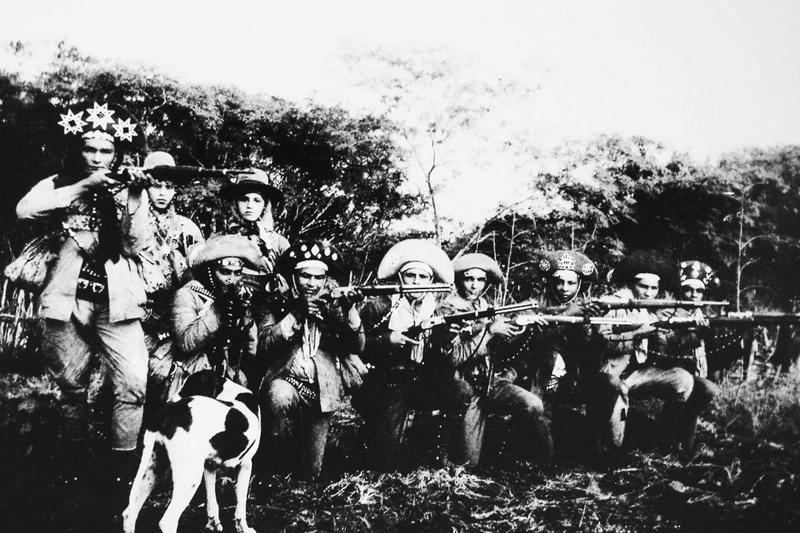
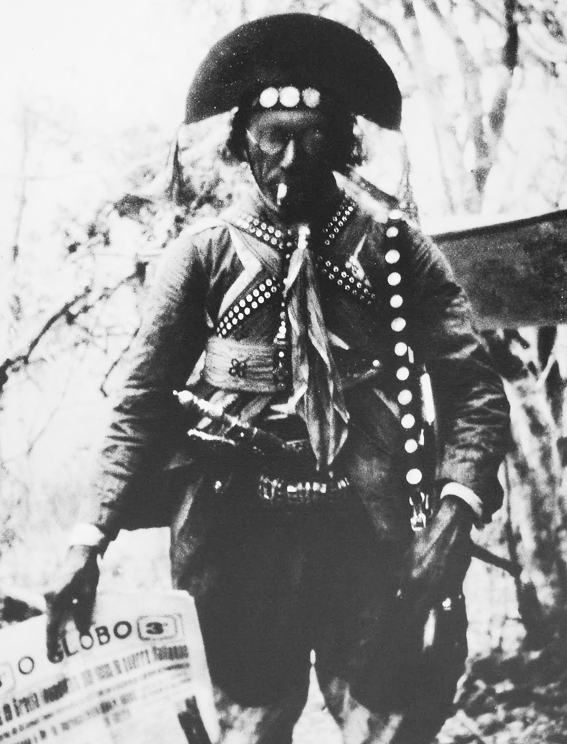
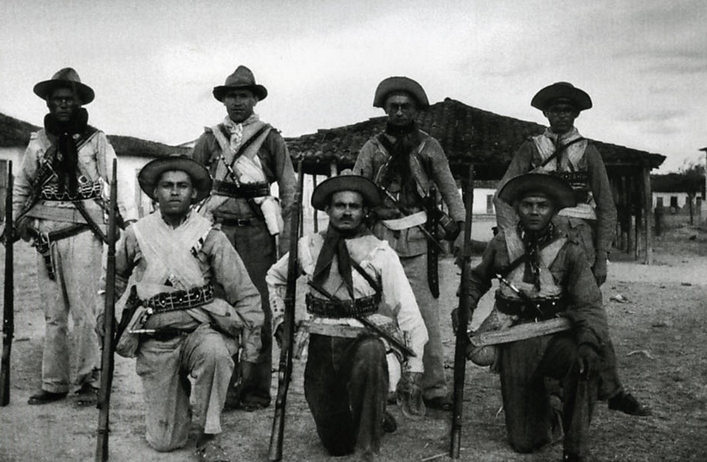

Zé Sereno e outros três cangaceiros de seu bando, 1936. (Benjamin Abrahão/Acervo Abafilm).

Maria Bonita, mulher de Lampião, posa para o fotógrafo libanês Benjamin Abrahão junto aos seus dois cães, Guary e Ligeiro, 1936. (Benjamin Abrahão/Acervo Abafilm).

Virgínio Fortunato, cunhado de Lampião, posa sorridente junto aos "cabras" e mulheres de seu bando para as lentes de Benjamin Abrahão, 1936. (Benjamin Abrahão/Acervo Abafilm).

Corisco, o primeiro a esquerda, tendo ao seu lado a companheira Dadá e integrantes do seu grupo, 1936. (Benjamin Abrahão/Acervo Abafilm).

O lendário cangaceiro Lampião posa para foto segurando uma edição de um dos jornais que costumava ler, "O Globo", 1936. (Benjamin Abrahão/Acervo Abafilm).

Volantes do estado da Bahia em registro de Benjamin Abrahão, circa 1936. (Benjamin Abrahão/Acervo Abafilm).